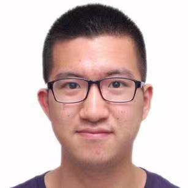

Hello, I'm Luyao Ren （任路遥）.
- Education: PhD and BS in Computer Science at Peking University, advised by Tao Xie 谢涛, Yingfei Xiong 熊英飞.
My research focuses on designing principles and building infrastructures for quality assurance of AI-oriented software systems such as AI compilers.
- Previous R&D Experience: visiting scholar at CMU (advised by Shurui Zhou 周抒睿, Christian Kästner), HKUST (advised by Shing-Chi Cheung 張成志);
Intern at Pika (GenAI startup), Google (AdMob Team), Microsoft (Xiaoice Team), Megvii/Face++ (4D Team, advised by Gang Yu 俞刚), ByteDance (AI Lab, advised by Lei Li 李磊).
- Misc: ACM-ICPC Competition (CHINA-Final 2016, Asia Regional 2015 - 2017), Gold Medal; NOI 2014, Silver Medal; APIO 2014, Gold Medal.
Email: rly AT pku.edu.cn
My research work during Ph.D. targets enhancing the testing and debugging of AI models and AI systems, through techniques such as program analysis, constraint solving, and domain-specific languages.
In addition to academic contributions, my work has successfully detected 50+ bugs in AI compilers and graph databases, and has been deployed in top-tier industrial companies.
Specification-Guided Testing and Debugging
- Input Reduction Enhanced LLM-based Program Repair.
Boyang Yang*, Luyao Ren*, Xin Yin, Jiadong Ren, Haoye Tian, Shunfu Jin.
- Validity-Preserving Delta Debugging via Generator Trace Reduction. TOSEM 2025.
Luyao Ren, Xing Zhang, Ziyue Hua, Yanyan Jiang, Xiao He, Yingfei Xiong, Tao Xie.
- Effective Random Test Generation for Deep Learning Compilers. SCIS 2024.
Luyao Ren, Ziheng Wang, Yingfei Xiong, Li Zhang, Guoyue Jiang, Tao Xie.
- GDsmith: Detecting Bugs in Cypher Graph Database Engines. ISSTA 2023.
Ziyue Hua, Wei Lin, Luyao Ren, Zongyang Li, Lu Zhang, Wenpin Jiao, Tao Xie.
- Invariants-awared Delta Debugging. (Draft)
Luyao Ren, Xing Zhang, Boyang Yang, Tao Xie.
Program Analysis on Neural Networks
- Detecting Numerical Bugs in Neural Network Architectures. ESEC/FSE 2020. Distinguished Paper Award.
Yuhao Zhang, Luyao Ren, Liqian Chen, Yingfei Xiong, Shing-Chi Cheung, Tao Xie.
- Reliability Assurance for Deep Neural Network Architectures Against Numerical Defects. ICSE 2023.
Linyi Li, Yuhao Zhang, Luyao Ren, Yingfei Xiong, Tao Xie.
During my undergraduate, I research on fork-based development in open source software community, improving collaboration and identifying redundancies by machine learning techniques. In addition to academic contributions, I have built a prototype of our research work for detecting duplicate issues on GitHub before GitHub officially launching this feature. My experience has received a “like” from GitHub CEO on Twitter.
Additionally, I have worked on program transformations and automated program repair, and developed an IntelliJ IDEA plugin named GenPater, which has been published on the JetBrains Marketplace.
Fork-based Development
- Identifying Redundancies in Fork-based Development. SANER 2019.
Luyao Ren, Shurui Zhou, Christian Kästner, Andrzej Wąsowski.
- Automated Patch Porting across Forked Projects. ESEC/FSE 2019 (SRC).
Luyao Ren.
- Forks Insight: Providing an Overview of GitHub Forks. ICSE 2018 (Poster). Tool
Luyao Ren, Shurui Zhou, Christian Kästner.
- Inferring Program Transformations From Singular Examples via Big Code. ASE 2019.
Jiajun Jiang, Luyao Ren, Yingfei Xiong, Lingming Zhang.